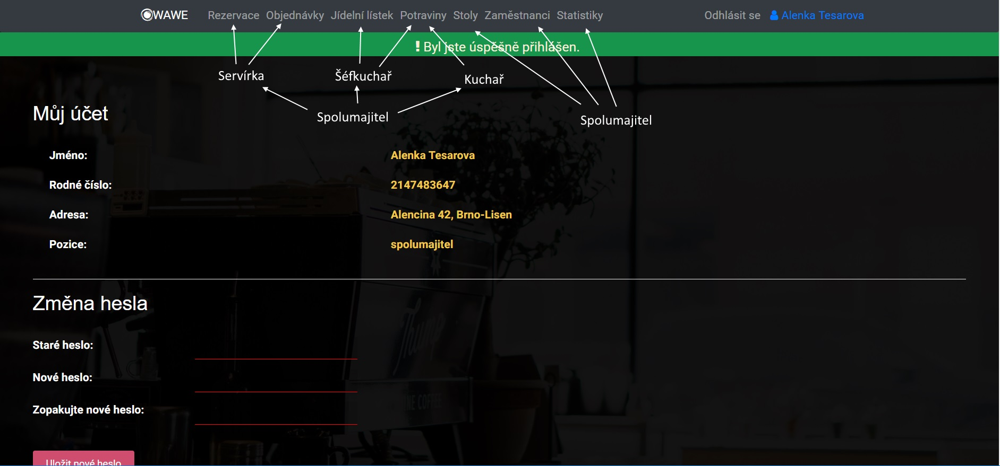
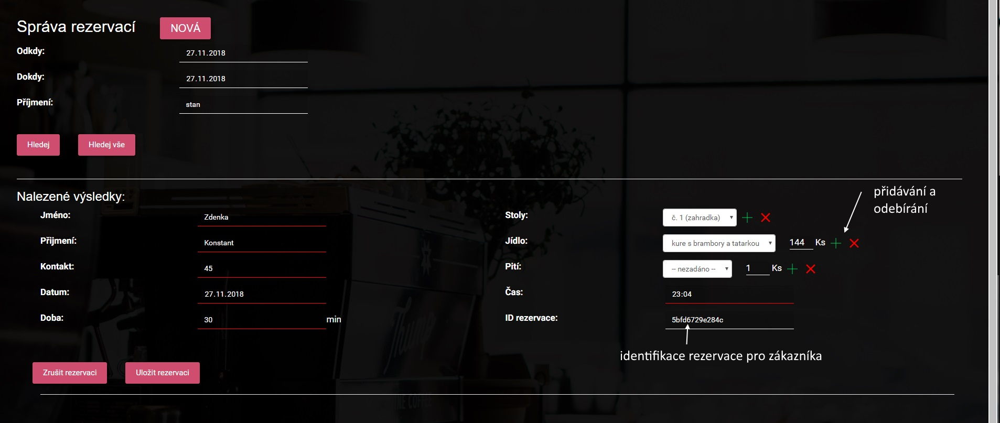
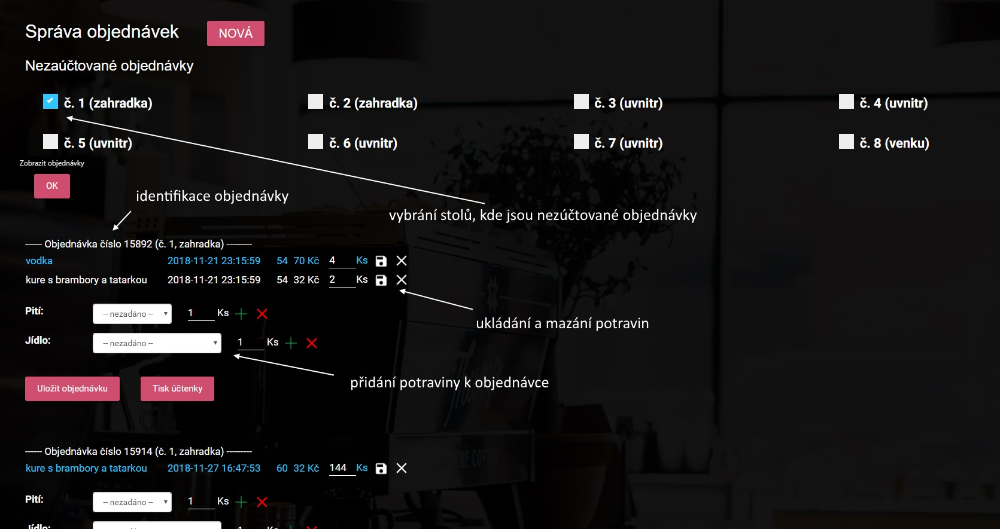
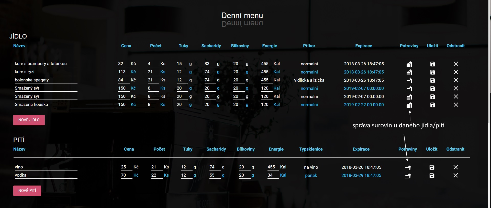
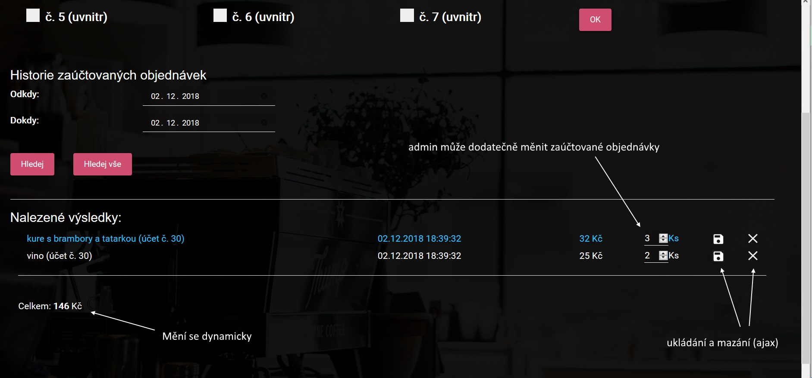
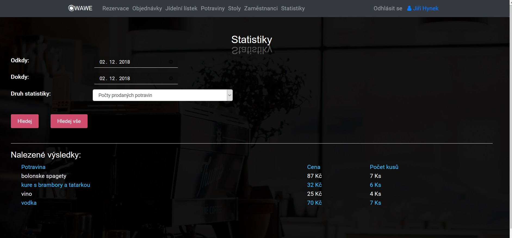

Projekt jsme implementovali v jazyku PHP, nepoužívali jsme žádny PHP framework, pouze CSS kniovny jako je bootstrap a google font Roboto. Jedná se o klasickou MVC architekturu, kde máme scripty rozdělené do 3 hlavních složek: kontrolery, pohledy a modely. Model vždy pracuje s databází a vrací kontrolerovi data, který je zpracuje a posílá je do pohledu. Pohled pak obsahuje šablony jednotlivých stránek aplikace.
Naimplementované funkce
Správa rezervací - servírka, spolumajitel
Kompletně vyřešena správa rezervací do restaurace na daný stůl či více stolů společně s přidáním objednávky
Nabídka stolů podle vybraného času rezervace a orientační doby návštěvy restaurace
Javascriptové řešení přidávání jídel a pití (plusem vedle jídla)
Správa objednávek - servírka, spolumajitel
Pro servírky, které vkládají objednávky k danému stolu
Nezaúčtované objednávky - jedná se o objednávky, u kterých zatím neexistuje účtenka, po vystavení účtenky se objednávka zařadí mezi vyúčtované a spolumajitel si je může prohlídnout v historii objednávek
Javascriptové řešení odstraňování, zvyšování a snižování množství jídel a pití (ajaxové)
Přidání jídla a pití k objednávce - nelze zde přidat jídlo a pití, které je již evidované u objednávky, jelikož je zde evidované množství
Správa jídla, potravin a stolů - šéfkuchař, kuchař, spolumajitel (podrobně práva na Obrázku 1)
Přidávání surovin k jídlu přes modální box u daného jídla (po kliknutí na ikonu s hamburgerem), nelze přidat stejnou surovinu vícekrát, lze ajaxově přidávat a snižovat množství v gramech, anebo odstraňovat surovinu z daného jídla
Editace jídla a pití v záložce Jídelní lístek přes ikonu s uložením na daném řádku (ajaxově)
Editace surovin v záložce Suroviny
Editace stolů v záložce Stoly
Statistiky - spolumajitel
Umožňuje majiteli vyjet si vybrané statistiky za zvolené období
Statistika Tržby dle servírek bere servírku podle té, která založila objednávku (ne která vytiskla účtenku)
Správa zaměstnanců - spolumajitel
Přidávání nového uživatele
Editace osobních údajů zaměstnanců (i hesel)
Technické detaily
připojování k databázi pomocí ovladače PDO
heslo se ukladá šifrovaně
ochrana proti XSS útokem
žádné SQL injection
přes 4000 řádků kódu
naimplementované komplet funkce pro práci s formulářem
žádný PHP framework
responzivní web
Obrázek 1: Zobrazena práva na záložky pro jednotlivé role
Obrázek 2: Správa rezervací
Obrázek 3: Správa objednávek
Obrázek 4: Správa jídel
Obrázek 5: Zaúčtované objednávky - vidí a může změnit pouze spolumajitel
Obrázek 6: Statistiky
Databáze
Oproti návrhu databáze z IDS jsme museli pozměnili:
přidali jsme id_obsajuje_potravina do obsahuje_potravina - důvodem byla snazší identifikace záznamu pro úpravu množství k potravině ve správě objednvek
odstranili jsme tabulku uživatelé - teď jsou naši uživatelé zaměstnanci
odstranili jsme sloupec suma z objednavka - suma se dá počítat dynamicky z jídel patřící dané objednávce
přidali jsme další sloupce k rezervaci a k zaměstnanci (např. login, heslo, kontakt_zakaznika, identifikator)
vytvořili jsme novou tabulku pozice - podle daných pozic určujeme práva vstupu do záložek